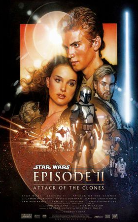
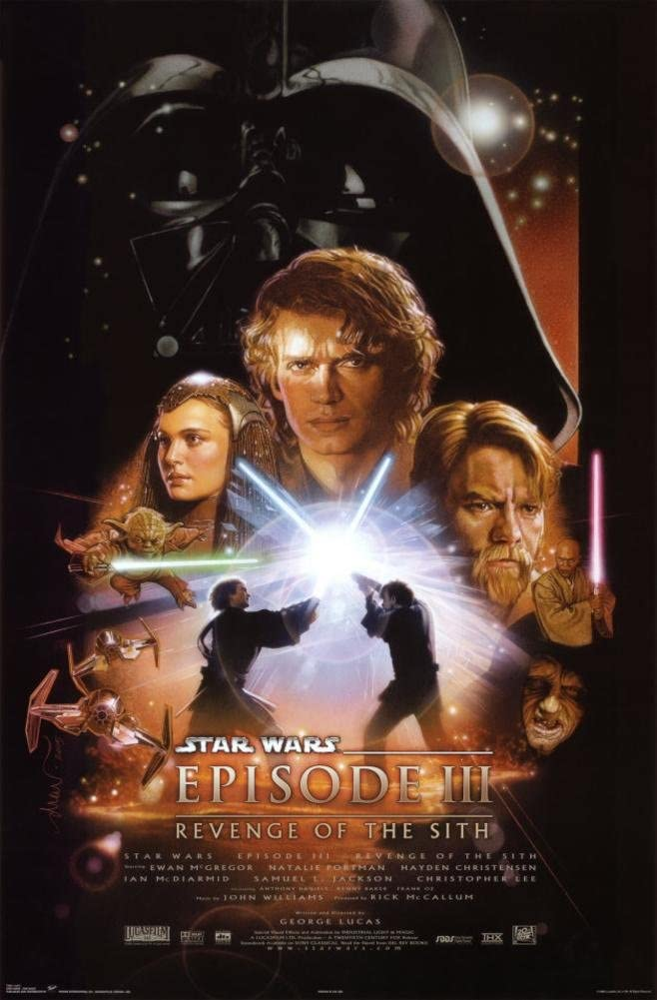

Prequel
A Ameaça Fantasma

Quando a maquiavélica Federação Comercial planeja invadir o pacífico planeta Naboo, o cavaleiro Jedi Qui-Gon Jinn e seu aprendiz Obi-Wan Kenobi embarcam em uma aventura para tentar salvar o planeta. Viajam com eles a jovem Rainha Amidala, que é visada pela Federação pois querem forçá-la a assinar um tratado político. Eles têm de viajar para os distantes planetas Tatooine e Coruscant em uma desesperada tentativa de salvar o planeta de Darth Sidious, o demoníaco líder da Federação que sempre surge em hologramas. Durante a viagem, Qui-Gon Jinn conhece Anakin Skywalker, um garoto de nove anos, e deseja treiná-lo para ser tornar um Jedi, pois o menino tem todas as qualidades para isto. Mas o tempo revelará que nem sempre as coisas são o que aparentam.
Ano de Lançamento: 1999
Duração: 2h16m
Diretor: George Lucas
O Ataque dos Clones
Dez anos após a tentativa frustrada de invasão do planeta Naboo, Obi-Wan Kenobi, Anakin Skywalker e Padmé Amidala estão juntos novamente. Neste período de tempo Obi-Wan passou de padawan a mestre Jedi de Anakin, sendo que ambos foram designados para proteger a senadora Amidala, que tem sua vida ameaçada por facções separatistas da República, com o objetivo de desencadear uma guerra civil intergalática. Com o passar do tempo surge um romance proibido entre Anakin e Amidala e Obi-wan descobre planos para um exército de clones.
Ano de Lançamento: 2002
Duração: 2h22m
Diretor: George Lucas
A Vingança dos Sith
As Guerras Clônicas estão em pleno andamento e as diferenças entre o Conselho Jedi e o Chanceler Palpatine aumentam cada vez mais. Obi-wan lida com as forças de General Grievous, um dos líderes do exercíto separatista. Anakin Skywalker mantém um elo de lealdade com Palpatine, ao mesmo tempo em que luta para que seu casamento com Padmé Amidala não seja afetado pela situação. Seduzido por promessas de poder, Anakin se aproxima cada vez mais de Darth Sidious até se tornar o temível Darth Vader. Juntos eles tramam um plano para aniquilar de uma vez por todas com os cavaleiros Jedi.
Ano de Lançamento: 2005
Duração: 2h20m
Diretor: George Lucas